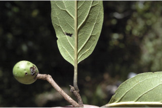
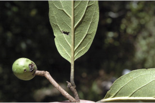

Large trees up to 20 m tall.
20 ಮೀ. ಎತ್ತರದವರೆಗಿನ ದೊಡ್ಡ ಗಾತ್ರದ ಮರಗಳು.
Large trees up to 20 m tall.
பெரிய மரங்கள் 20 மீ. உயரம் வரை வளரக்கூடியது.
Bark grey, irregularly large flaky, sometimes exfoliating; blaze reddish, smelling bitter almonds or bed bugs.
ತೊಗಟೆ ಬೂದು ಬಣ್ಣದಲ್ಲಿದ್ದು, ಅನಿಯತವಾದ ದೊಡ್ಡ ಗಾತ್ರದ ಚಕ್ಕೆ ರೂಪದಲ್ಲಿರುತ್ತವೆ , ಕೆಲವು ವೇಳೆ ಪದರದಂತೆ ಕಳಚಿ ಹೋಗುವ ಮಾದರಿಯಲ್ಲಿರುತ್ತವೆ; ಕಚ್ಚು ಮಾಡಿದ ಜಾಗ ಕೆಂಪು ಛಾಯೆ ಹೊಂದಿದ್ದು ಕಹಿ ಬಾದಾಮಿಯ ಅಥವಾ ಹಾಸಿಗೆ ತಿಗಣೆಯ ವಾಸನೆಯನ್ನು ಹೊಂದಿರುತ್ತದೆ,
Bark grey, irregularly large flaky, sometimes exfoliating; blaze reddish, smelling bitter almonds or bed bugs.
மரத்தின் பட்டை சாம்பல் நிறமானது, ஒழுங்கற்ற பெரிய செதில்களாக உதிருபவை, சிலசமயங்களில் உரியக்கூடியது; உள்பட்டை சிவப்பு நிறமானது, கசப்பு அல்மாண்ட் அல்லது மூட்டைப் பூச்சி மணம் உடையது.
Branchlets subterete, puberulous, lenticellate.
ಕಿರುಕೊಂಬೆಗಳು ಉಪದುಂಡಾಗಿರುತ್ತವೆ,ಸೂಕ್ಷ್ಮ ಮೃದುತುಪ್ಪಳವನ್ನು ಹೊಂದಿದ್ದು ವಾಯುವಿನಿಮಯ ಬೆಂಡು ರಂಧ್ರಗಳ ಸಮೇತವಿರುತ್ತವೆ.
Branchlets subterete, puberulous, lenticellate.
சிறியநுனிக்கிளைகள் குறுக்குவெட்டுத் தோற்றத்தில் வளையமானது, நுண்ணிய உரோமங்களுடையது, பட்டைத்துளைகள் (லெண்டிசெல்லேட்) உடையது.
Leaves simple, alternate, distichous; stipule caducous and leaving scar; petiole 0.6-2.8 cm long, canaliculate, glabrous; lamina 7-17 x 2.5-6.5 cm, ovate to ovate -lanceolate, apex gradually acuminate with blunt tip, twisted, base rounded or asymmetric, sometimes attenuate, margin entire, coriaceous, glabrous, a pair of circular glands usually present near base beneath, sometimes present in upper half, rarely absent; midrib canaliculate above, reddish beneath; secondary_nerves 6-8 pairs, reddish when young, ascending; tertiary_nerves reticulo-percurrent.
ಎಲೆಗಳು ಸರಳವಾಗಿದ್ದು ಪರ್ಯಾಯ ಮತ್ತು ಸುತ್ತು ಜೋಡನಾ ವ್ಯವಸ್ಥೆಯಲ್ಲಿದ್ದು ಕಾಂಡದ ಎರಡೂ ಕಡೆ ಎದುರು ಬದರಿನ ಲಂಬ ಸಾಲಿನಲ್ಲಿರುತ್ತವೆ; ಕಾವಿನೆಲೆಗಳು ಉದುರಿದ ನಂತರ ಗುರುತುಗಳನ್ನು ಉಳಿಸುತ್ತವೆ;ತೊಟ್ಟು 0.6 – 2.8 ಸೆಂ.ಮೀ.ವರೆಗಿನ ಉದ್ದವಿದ್ದು, ಕಾಲುವೆಗೆರೆಯನ್ನು ಹೊಂದಿದ್ದು ರೋಮರಹಿತವಾಗಿರುತ್ತದೆ; ಪತ್ರಗಳು 7 -17 X 2.5–6.5 ಸೆಂ.ಮೀ. ಗಾತ್ರ, ಅಂಡದಿಂದ ಅಂಡ-ಭರ್ಜಿಯವರೆಗಿನ ಆಕಾರ ಹೊಂದಿದ್ದು,ಅಗ್ರದಲ್ಲಿ ಮೊಂಡಾಗ್ರವುಳ್ಳ ಹೊಂದಿದ ಕ್ರಮೇಣ ಚೂಪಾಗುವ ಮತ್ತು ತಿರುಚಿಕೊಂಡಿರುವ ತುದಿ, ದುಂಡಾದ ಅಥವಾ ಅಸಮವಾದ ,ಕೆಲವು ವೇಳೆ ಒಳಬಾಗಿದ ಬುಡ, ನಯವಾದ ಅಂಚು, ತೊಗಲನ್ನೋಲುವ ಮೇಲ್ಮೈ ಹೊಂದಿದ್ದು ರೋಮರಹಿತವಾಗಿರುತ್ತವೆ,ಸಾಮಾನ್ಯವಾಗಿ ವೃತ್ತಾಕಾರದ ಒಂದು ಜೋಡಿ ರಸಗ್ರಂಥಿಗಳು ಪತ್ರಗಳ ತಳ ಭಾಗದ ಬುಡದಲ್ಲಿರುತ್ತವೆ,ಕೆಲವು ವೇಳೆ ಪತ್ರದ ಮೊದಲ ಅರ್ಧ ಭಾಗದಲ್ಲಿರುತ್ತವೆ, ಅಪರೂಪವಾಗಿ ರಸಗ್ರಂಥಿಗಳು ಇರುವುದಿಲ್ಲ;ಮಧ್ಯನಾಳ ಪತ್ರದ ಮೇಲ್ಭಾಗದಲ್ಲಿ ಕಾಲುವೆಗೆರೆ ಸಮೇತವಿದ್ದು ತಳಭಾಗದಲ್ಲಿ ಕೆಂಪು ಛಾಯೆ ಹೊಂದಿರುತ್ತದೆ; ಎರಡನೇ ದರ್ಜೆಯ ನಾಳಗಳು 6 ರಿಂದ 8 ಜೋಡಿಗಳಿದ್ದು ಎಳೆಯದಾಗಿದ್ದಾಗ ಕೆಂಪಾಗಿರುತ್ತವೆ,ಆರೋಹಣ ಮಾದರಿಯಲ್ಲಿರುತ್ತವೆ;ಮೂರನೇ ದರ್ಜೆಯ ನಾಳಗಳು ವಿಶಾಲ ಜಾಲಬಂಧ ನಾಳ ವಿನ್ಯಾಸಲ್ಲಿದ್ದು ಎಲೆಯ ದಿಂಡಿಗೆ ಅಡ್ಡವಾಗಿ ಕೂಡುವ ಮಾದರಿಯಲ್ಲಿರುತ್ತವೆ.
Leaves simple, alternate, distichous; stipule caducous and leaving scar; petiole 0.6-2.8 cm long, canaliculate, glabrous; lamina 7-17 x 2.5-6.5 cm, ovate to ovate -lanceolate, apex gradually acuminate with blunt tip, twisted, base rounded or asymmetric, sometimes attenuate, margin entire, coriaceous, glabrous, a pair of circular glands usually present near base beneath, sometimes present in upper half, rarely absent; midrib canaliculate above, reddish beneath; secondary_nerves 6-8 pairs, reddish when young, ascending; tertiary_nerves reticulo-percurrent.
இலைகள் தனித்தவை, மாற்றுஅடுக்கமானவை, இருநெடுக்கு வரிசையிலையடுக்கம் (டைஸ்டிக்கஸ்); இலையடிச்செதில் எளிதில் உதிரக்கூடியவை மற்றும் தழும்புகளை ஏற்படுத்தவல்லது; இலைக்காம்பு 0.6-2.8 செ.மீ. நீளமானது, குறுக்குவெட்டுத் தோற்றத்தில் கேனாலிகுலேட், உரோமங்களற்றது; இலை அலகு 7-17 X 2.5-6.5 செ.மீ., முட்டை வடிவானது முதல் முட்டை-ஈட்டி வடிவானது, அலகின் நுனி சீராக அதிக்கூரியதுடன் அதன் முனை மழுங்கியது, திருகியது, அலகின் தளம் வட்டமானது அல்லது சமமற்றது, சிலசமயங்களில் அட்டனுவேட், அலகின் விளிம்பு முழுமையானது, கோரியேசியஸ், உரோமங்களற்றது, அலகின் கீழ்பரப்பில் தளத்திற்கு அருகாமையில் ஒர் ஜோடி சுரப்பிகளுடையது, சிலசமயங்களில் அலகின் நீளத்தில் பாதிக்கு மேல் பகுத்யில் சுரப்பிகளுடையது, அரிதாக சுரப்பிகளற்றது; மையநரம்பு மேற்புறத்தில் அலகின் பரப்பைவிட பள்ளமானது, சிவப்பு நிறமானது; இரண்டாம் நிலை நரம்புகள் 6-8 ஜோடிகள், இளம்பருவத்தில் சிவப்பு நிறமானது, நுனி நோக்கி வளைந்தவை; மூன்றாம் நிலை நரம்புகள் வலைப்பின்னல்-பெர்க்கரண்ட் அமைப்பு கொண்டது.
Inflorescence axillary racemes; flowers white.
ಪುಷ್ಪಮಂಜರಿಗಳು ಅಕ್ಷಾಕಂಕುಳಿನಲ್ಲಿನ ಮಧ್ಯಾಭಿಸರ ಮಾದರಿಯಲ್ಲಿರುತ್ತವೆ;ಹೂಗಳು ಬಿಳಿ ಬಣ್ಣದವು.
Inflorescence axillary racemes; flowers white.
மஞ்சரி இலைக்கோணங்களில் காணப்படும் ரெசீம்; மலர்கள் வெள்ளை நிறமானது.
Drupe, shallowly 2-lobed, glabrous; seeds 2, compressed.
ಡ್ರೂಪ್ಗಳು ಆಳ ಹೊಂದಿರದ 2 ಹಾಲೆಗಳ ಸಮೇತವಿರುತ್ತದೆ,ರೋಮರಹಿತವಾಗಿರುತ್ತದೆ; ಬೀಜಗಳ ಸಂಖ್ಯೆ 2 ಇದ್ದು ಸಂಕುಚಿತಗೊಂಡಿರುತ್ತವೆ.
Drupe, shallowly 2-lobed, glabrous; seeds 2, compressed.
உள்ளோட்டுத்தசைகனி (ட்ரூப்), 2-அறைகளுடையது, உரோமங்களற்றது; விதைகள் 2, தட்டையானது.


 
